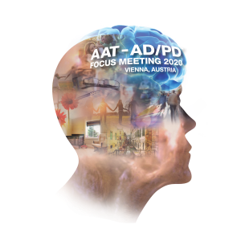
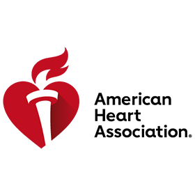
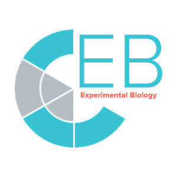
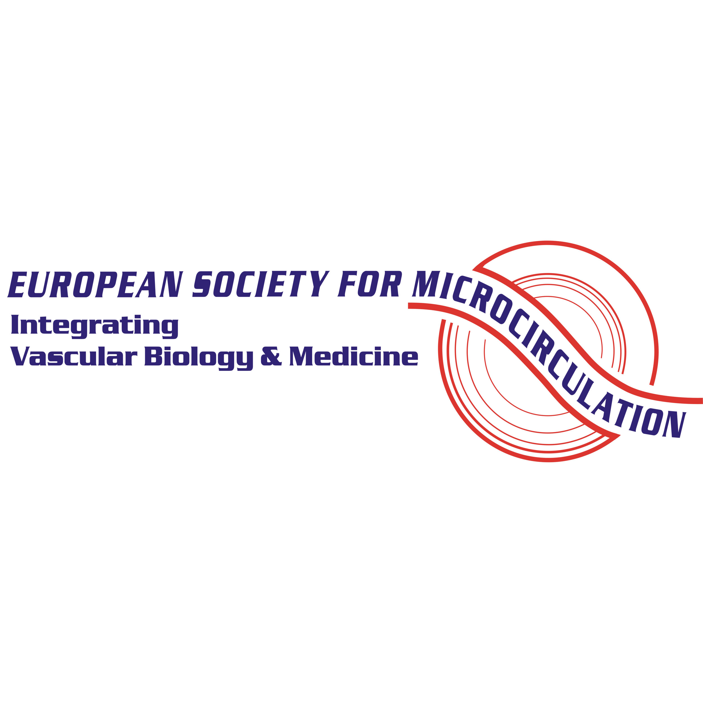
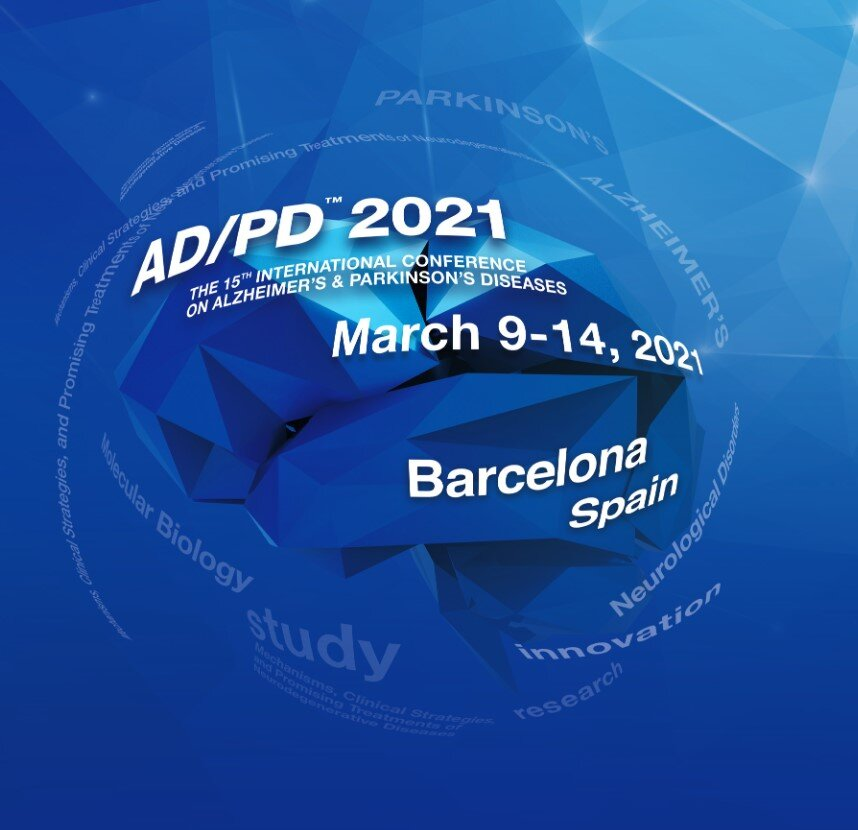
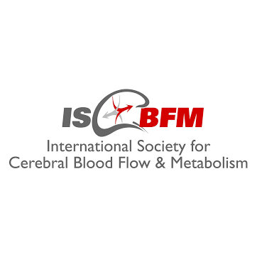
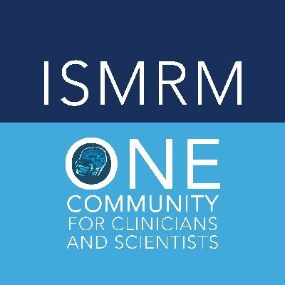
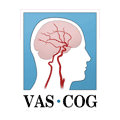
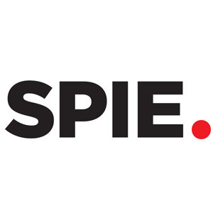

Societies & Conferences
We engage actively with the international brain science and biomedical imaging communities.
Alzheimer’s Association International Conference (AAIC)
AAIC brings together international investigators, clinicians and care researchers to discuss the latest studies, theories and discoveries that will help bring the world closer to breakthroughs in dementia science.

AAT-AD/PD Focus Meeting
The Advances in Alzheimer’s and Parkinson’s Therapies Focus Meeting presents the latest breakthroughs in treatment, translational R&D, early diagnosis, drug development and clinical trials in Alzheimer’s, Parkinson’s and other related neurological disorders.

American Heart Association’s International Stroke Conference
The world’s premier meeting dedicated to the science and treatment of cerebrovascular disease. Topics focus on stroke recovery, vascular cognitive impairment, experimental mechanisms, and ongoing clinical trials.

Experimental Biology (EB)
The annual meeting of five societies bringing together more than 12,000 scientists in one interdisciplinary community. A hub to explore anatomy, biochemistry, investigative pathology, pharmacology, and physiology.

European Society for Microcirculation
Aims to advance understanding of microcirculation by bringing together clinicians and scientists from physiology, vascular biology, genetics, and biophysics for the World Congress for Microcirculation.
Gordon Research Conference
Provides an international forum for the presentation and discussion of frontier research in the biological, chemical, physical, and engineering sciences and their interfaces.

International Conference on Alzheimer’s & Parkinson’s Diseases (AD/PD)
This conference is at the forefront of unraveling the mechanisms and improving the treatment of Alzheimer's, Parkinson's and other related neurodegenerative diseases.

ISCBFM: Brain & Brain PET Meeting
Promotes research in cerebral blood flow, metabolism, and cerebral function in physiological and pathophysiological states, ranging from molecular dynamics to clinical PET neuroimaging.

International Society for Magnetic Resonance in Medicine (ISMRM)
A multi-disciplinary association that promotes innovation, development, and application of magnetic resonance techniques in medicine and biology throughout the world.

The International Society of Vascular Behavioural and Cognitive Disorders (VAS-COG)
Investigates vascular factors related to brain injury and dysfunction through psychiatric, psychological, cognitive, and functional symptoms.

SPIE Photonics West
The premier event for the photonics and laser communities, showcasing laser systems, optical devices, and biophotonics imaging setups (including two-photon microscopes).
Society for Neuroscience (SfN) Annual Meeting
The premier venue for neuroscientists to present emerging brain science, forge collaborations, explore new tools and technologies, and advance scientific careers.